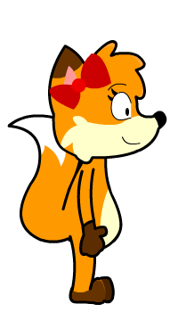
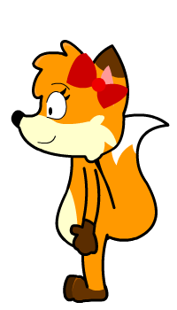
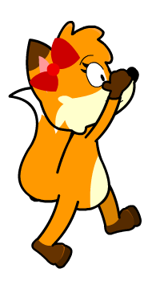
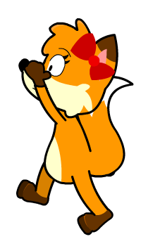
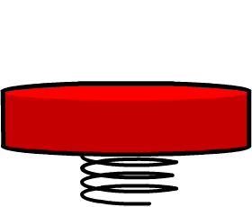
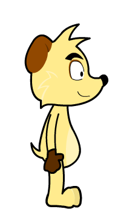
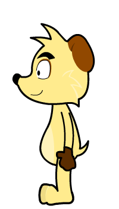
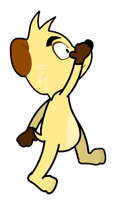
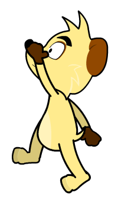

<!DOCTYPE HTML>
<html lang="en-US">
<head>
    <meta charset="UTF-8">
        <meta name="viewport" content="initial-scale = 1.0, user-scalable=no" />
        <meta name="apple-mobile-web-app-capable" content="yes">
    <title>Diabetes Self Advocacy</title>
	 <style type="text/css">
		img {
			height:340px;
		}

		#text {

		}

		.preload {
			position:absolute;
			left:100px;
			top:150px;
		}
    </style>
    <script type = "text/javascript" src = "platformerLib.js"></script>
    <script type = "text/javascript" src = "simpleGame.js"></script>
	<script type = "text/javascript" src = "Helper/helper.js"></script>
    <script type="text/javascript">

        function getParameterByName(name) {
            name = name.replace(/[\[]/, "\\[").replace(/[\]]/, "\\]");
            var regex = new RegExp("[\\?&]" + name + "=([^&#]*)"),
                results = regex.exec(location.search);
            return results == null ? "" : decodeURIComponent(results[1].replace(/\+/g, " "));
        }


		// Global game variables
        var player;			// The player
		var blocks;			// Array to contain the blocks
		var springs;        // Array to contain the springs
		var joy;			// Joystick object
		var preload;		// Div used to preload images.
		var curNode; 		// The current node (level) being displayed
		var childNodes; 	// The next nodes that may be displayed
		var scene; 			// The scene object
		var background; 	// The background sprite
		var choices; 		// Array to hold the goal textboxes
		var situation; 		// The current question textbox
		var items; 			// Array to hold the current level items
		var inventory; 		// Inventory object
		var variables; 		// Associative array to hold variables defined by levels
		var curSound; 		// The current sound to be played after loaded
		var soundCounter; 	// Counts number of frames since the beginning of the level, used to give curSound time to load
		var soundWait;		// How long to wait before playing curSound
		var sugarBar;		// Blood sugar "health" bar object
		var sugarRate;		// How fast the blood sugar changes per frame
        var sounds;         // array of sounds
        var helper;         // used for the helper

        var gender = getParameterByName('gender');

		function init(gender) {
            gender = getParameterByName('gender');
			preload = document.getElementById('preload');
			preloadAnimations();

			// Initialize the scene and all the game objects and arrays with default values.
			scene = new Scene();
			scene.setSize(948, 711);
			background = new BG(scene, 'images/BG0001.png', 948, 711, 474, 356, 0);

			// Heleper
			helper = new Helper(scene, 'AnimatedCat/Cat.png', 80, 80, 908, 620);
			helper.z = 10;
			helper.setPosition(920, 580);
			helper.setAngle(310);
			helper.helpBox.setPosition(750,525);
			helper.helpBox.text = "This is a help box";


			sounds = new CreateSounds(scene);
			situation = new Situation(scene, 'This is a situation', null, 700, 100, 2);
			situation.setPosition(598, 660);
			inventory = new Inventory(scene, 'images/backpack.png', 64, 64, 9999, 9999, 1);
			inventory.maxContents = 1;
			childNodes = [];
			items = [];
			variables = [];
			choices = [];
			blocks = [];
			springs = [];
			soundWait = 10;
			soundCounter = soundWait;
			player = new Player(scene, 64, 112, 0, 0, 2, gender);
			sugarBar = new BSBar(scene, 250, 32, 200, 25, 5);
			sugarRate = 0;

			// Set up the joy object and turn on virtual keys.
			joy = new Joy();
			virtKeys = true;

			// THRESHHOLD determines how far a user needs to move their fingers before a virtual key is triggered.
			THRESHHOLD = 25;

			// Start the scene and load up the first level (named tutorialRight.text).
			scene.start();
			var start = 'nodes/tutorialRight.txt';
			loadStart(start);
		} // end init

		function preloadAnimations() {
			// Grabs all the player images and throws them into the preload div.
			// Currently only loads all the boy images, so either needs to be generalized to any animations potentially used in the game
			// or at least include the girl images.

            if (gender == 'girl') {
                preload.innerHTML += '';
                preload.innerHTML += '';
                preload.innerHTML += '';
                preload.innerHTML += '';
                preload.innerHTML += '';

                // There are 19 walking animations. Again, this could be generalized to store any animations used by the game.
                for (var i = 0; i < 19; i ++) {
                    preload.innerHTML += '';
                    preload.innerHTML += '';
                } // end for
            } // end if

            else if (gender == 'boy') {
                preload.innerHTML += '';
                preload.innerHTML += '';
                preload.innerHTML += '';
                preload.innerHTML += '';
                preload.innerHTML += '';

                // There are 19 walking animations. Again, this could be generalized to store any animations used by the game.
                for (var i = 0; i < 19; i ++) {
                    preload.innerHTML += '';
                    preload.innerHTML += '';
                } // end for
            } // end else if


            // There are 15 spring animations.
			for (var j = 0; j <= 15; j++){
                preload.innerHTML += '';
            } //end for
		} // end preloadAnimations

		function update() {
		// Updates the sprites and calls all the check functions to run the game.
			spriteList.update();
			checkInventoryAdd();
			checkBlockCollisions();
			checkSpringCollisions();
			checkChoiceCollisions();
			checkBS();
			sugarBar.changeBSBy(sugarRate);
			checkItemDrag();
			checkSoundPlay();
		} // end update

		function checkItemDrag() {
		// Checks if an item is being dragged. Only items in the player's inventory are dragable and only one item
		// can be dragged at a time. The player should not move if an item is being dragged.

			// Determine if any items are being dragged already using dragItem as the index of the item being dragged.
			var dragItem = -1;
			for (var i = 0; i < items.length; i ++) {
				if (items[i].dragging) {
					dragItem = i;
				} // end if
			} // end for

			// Set if each item is able to be dragged or not.
			for (var i = 0; i < items.length; i ++) {
				if (dragItem == -1 && inventory.hasItem(items[i])) {
				// An item can be dragged if it is in the player's inventory and no other item is being dragged.
					items[i].okayToDrag();
				} else if (dragItem != i) {
				// Any item not being dragged should not be able to be dragged (this prevents stacking of objects)
					items[i].notOkayToDrag();
				} else if (!inventory.hasItem(items[i])) {
				// If an item was being dragged and was taken out of the player's inventory, it should no longer be draggable.
				// The item should also be placed in the level behind the player.
					items[i].dragging = false;
					items[i].notOkayToDrag();
					var xOff = 0;

					// Determines if the item should be placed left or right of the player based on their facing.
					// Also makes sure that the item does not pass the borders of the screen when dropped.
					if (player.facing == 'R'){
                        if (player.x <= 150)
                            xOff = -player.x;
                        else
                            xOff = -player.width * 2;
                    }
					if (player.facing == 'L'){
                        if (player.x >= 800)
                            xOff = 948 - player.x
                        else
                            xOff = player.width * 2;
                    }
					items[i].setPosition(player.x + xOff, player.y);
				} // end if
			} // end for

			// Disable or enable player movement depending on whether an item is being dragged.
			if (dragItem == -1) {
				player.canMove = true;
			} else {
				player.canMove = false;
			} // end if
		} // end checkItemDrag

		function checkChoiceCollisions() {
		// If a player collides with a choice, that choice's level will be displayed.
			for (var i = 0; i < choices.length; i ++) {
				if(player.collidesWith(choices[i]) && choices[i].answer == "correct") {
					player.visible = false;
					sounds.playCorrect();
					helper.waving = false;
					helper.helpBox.visible = false;
					helper.helping = false;
					switchNode(i);
				} // end if
				else if (player.collidesWith(choices[i]) && choices[i].answer == "incorrect") {
					player.visible = false;
					sounds.playIncorrect();
					helper.helpBox.visible = false;
					helper.helping = false;
					switchNode(i);
					helper.waving = true;
				} // end else if
                else if(player.collidesWith(choices[i])){
					player.visible = false;
					helper.helpBox.visible = false;
					helper.helping = false;
					switchNode(i);
                } // end else if
			} // end for
		} // end checkChoiceCollisions


		function checkSpringCollisions(){
            for(var i = 0; i < springs.length; i++){
                var angle = springs[i].angleTo(player);
                var thisTop = springs[i].y - springs[i].height / 2;
                var thisBottom = springs[i].y + springs[i].height / 2;
                var playerTop = player.y - player.height / 2;
                var playerBottom = player.y + player.height / 2;
                var springSpeed = -23;

                // Handles when the player jumps while on the spring
                if (player.dy < springSpeed)
                    player.setDY(springSpeed + .5);

                if(springs[i].collidesWith(player)) {
					if(((angle >= 60 && angle <= 300) && player.falling) || (angle <=-60 && angle >= -300) && player.falling){
					// If the player is above the spring, then they should stop falling.
						player.falling = false;
						player.onSpring = true;
						springs[i].springing = true;
						// Make sure the player is not inside the spring.
						sounds.playSpring();
                        //player.setPosition(player.x, thisTop - player.height / 2);
                        player.setDY(springSpeed);

                    } //top of spring is lower than the middle of the player to the top and bottom of spring is higher than the middle of the player to the bottom
                    if(thisTop > (player.y - player.height / 2)){
					// If the player runs into the side of a spring, only stop the sideways motion.
						player.setPosition(player.x - player.dx, player.y);
						player.setDX(0);
					} // end if
					else if(player.falling) {
					// If the player is below the spring, then they should keep falling but stop accelerating upwards and sideways.
						player.setDY(0);
						player.setDX(0);
						player.setPosition(player.x, thisBottom + player.height / 2 + 1);
					} // end if
				} // end if
			} // end for
		} // end checkSpringCollisions


		function checkBlockCollisions() {
		// If a player collides with a block, their motion should be stopped.
			for(var i = 0; i < blocks.length; i ++) {
                var angle = blocks[i].angleTo(player);
                var thisTop = blocks[i].y - blocks[i].height / 2;
                var thisBottom = blocks[i].y + blocks[i].height / 2;
                var playerTop = player.y - player.height / 2;
                var playerBottom = player.y + player.height / 2;

                if (blocks[i].dx > 0 || blocks[i].dx < 0){
                    if(blocks[i].collidesWith(blocks[i+1]) || blocks[i].collidesWith(blocks[i-1]))
                        blocks[i].setDX(blocks[i].dx*-1);
                    if(blocks[i].collidesWith(blocks[i+1]) && blocks[i+1].dx< 0)
                        blocks[i].setDX(blocks[i].dx*-1)
                    if(blocks[i].collidesWith(blocks[i+1]) && blocks[i+1].dx > 0)
                        blocks[i+1].setDX(blocks[i+1].dx*-1)
                }

                if ((blocks[i].dx > 0 || blocks[i].dx < 0) && (blocks[i].collidesWith(player))){
                    //sounds.playMovingPlatform();
                    if(((angle >= 60 && angle <= 300) && player.falling) || (angle <=-60 && angle >= -300) && player.falling){
					// If the player is above the block, then they should stop falling.
						player.falling = false;
						player.onBlock = true;
						player.setDY(0);
						//Make sure the player is not inside the block.
						player.setPosition(player.x, thisTop - player.height / 2);
						if (player.walking == true && blocks[i].dx < 0 && player.facing == "R")
                            player.setDX(blocks[i].dx*1.8 + 12);
                        else if (player.walking == true && blocks[i].dx < 0 && player.facing == "L")
                            player.setDX(blocks[i].dx*1.8);
                        else if (player.walking == true && blocks[i].dx > 0 && player.facing == "R")
                            player.setDX(blocks[i].dx*1.8);
                        else if (player.walking == true && blocks[i].dx > 0 && player.facing == "L")
                            player.setDX(blocks[i].dx*1.8 - 12);
                        else
                            player.setDX(blocks[i].dx*1.8);
                    } //end if
                } // end if

				if(blocks[i].collidesWith(player)) {
					if(((angle >= 60 && angle <= 300) && player.falling) || (angle <=-60 && angle >= -300) && player.falling){
					// If the player is above the block, then they should stop falling.
						player.falling = false;
						player.onBlock = true;
						player.setDY(0);
						// Make sure the player is not inside the block.
						player.setPosition(player.x, thisTop - player.height / 2);

                    } //top of block is lower than the middle of the player to the top and bottom of block is higher than the middle of the player to the bottom
                    if(thisTop > (player.y - player.height / 2) && thisBottom < player.y + (player.height / 2)) {
					// If the player runs into the side of a block, only stop the sideways motion.
						player.setPosition(player.x - player.dx, player.y);
						player.setDX(0);
					} // end if
					else if(player.falling) {
					// If the player is below the block, then they should keep falling but stop accelerating upwards and sideways.
						player.setDY(0);
						player.setDX(0);
						player.setPosition(player.x, thisBottom + player.height / 2 + 1);
					} // end if
				} // end if
			} // end for
		} // end checkBlockCollisions

		function checkBS() {
		// Checks if the blood sugar has reached the maximum or minimum value. Resets the level if so.
			if (sugarBar.visible) {
				if (sugarBar.curValue >= sugarBar.maxValue || sugarBar.curValue <= sugarBar.minValue) {
                    sounds.playBuzzer();
					player.restart();
					sugarBar.setBSToMid();
                } //end if
			} // end if
		} // end checkBS

		function checkSoundPlay() {
		// Checks if enough time has passed for the sound load and plays the sound.
			if (soundCounter == 0) {
				if (curNode.soundSrc != null) curSound.playSound();
				soundCounter --;
			} else if (soundCounter > 0) {
				soundCounter --;
			} // end if
		} // end checkSoundPlay

		function makePlayer() {
		// Resets player values if they are defined by the level.
			if (curNode.playerAnimation != null) {
			// Redefines the images for animations.
				var frames = parseInt(curNode.playerAnimation.walkFrames);
				player.setWalkAnim(frames, curNode.playerAnimation.beginWalkFile, curNode.playerAnimation.endWalkFile);
				player.setJumpAnim(curNode.playerAnimation.beginJumpFile, curNode.playerAnimation.endJumpFile);
			} // end if

			if (curNode.playerMovement != null) {
			// Redefines how fast the player moves.
				var move = parseInt(curNode.playerMovement.moveSpeed);
				var max = parseInt(curNode.playerMovement.maxSpeed);
				var slow = parseInt(curNode.playerMovement.slowingSpeed);
				var jump = parseInt(curNode.playerMovement.jumpSpeed);
				var fall = parseInt(curNode.playerMovement.fallSpeed);
				player.setMovement(move, max, slow, jump, fall);
			} // end if

			if (curNode.playerSize != null) {
			// Redefines the player size.
				player.width = parseInt(curNode.playerSize.width);
				player.height = parseInt(curNode.playerSize.height);
			} // end if
		} // end makePlayer

		function makeBSBar() {
		// Redefines the blood sugar bar values if they are defined by the level.
			if (curNode.barValues != null) {
			// Redefine the min and max values.
				sugarBar.setMin(parseInt(curNode.barValues.min));
				sugarBar.setMax(parseInt(curNode.barValues.max));
			} // end if*/

			if (curNode.barSize != null) {
			// Redefine the size of all the bar elements.
				var width = parseInt(curNode.barSize.barWidth);
				var height = parseInt(curNode.barSize.barHeight);
				sugarBar.resizeBar(width, height);
				width = parseInt(curNode.barSize.sliderWidth);
				height = parseInt(curNode.barSize.sliderHeight);
				sugarBar.resizeSlider(width, height);
			} // end if*/

			if (curNode.barImages != null) {
			// Redefines all the bar images.
				sugarBar.setBackground(curNode.barImages.background);
				sugarBar.setForeground(curNode.barImages.foreground);
				sugarBar.setSliderImage(curNode.barImages.slider);
				sugarBar.setLabelImage(curNode.barImages.labels);
			} // end if*/

		} // end makeBSBar

		function makeBlocks() {
		// Makes the blocks as defined by the level.
			// First destroy all the previous level's blocks.
			for (var i = 0; i < blocks.length; i ++) {
				var index = spriteList.list.indexOf(blocks[i]);
				spriteList.list.splice(index, 1);
			} // end for
			blocks = [];

			// Default block values.
			var width = 50;
			var height = 10;
			var z = 1;
			var img = 'images/platMid.png';

			if (curNode.blockAttributes != null) {
			// Redefines block values if defined by the level.
				width = curNode.blockAttributes.width;
				height = curNode.blockAttributes.height;
				img = curNode.blockAttributes.image;
			} // end if

			if (curNode.blockPositions != null) {
			// Creates a block at each block position defined by the level.
				for (var i = 0; i < curNode.blockPositions.length; i ++) {
					var x = parseInt(curNode.blockPositions[i].x);
					var y = parseInt(curNode.blockPositions[i].y);
					var block = new Block(scene, img, width, height, x, y, z);
					blocks.push(block);
				} // end for
			} // end if

            if (curNode.blockMovements != null){
            // Allows blocks to be moved left to right defined by the level.
                for (var i = 0; i < curNode.blockMovements.length; i++){
                    var bNum = parseInt(curNode.blockMovements[i].bNum);
                    var speed = parseInt(curNode.blockMovements[i].speed);
                    blocks[bNum].dx = speed;
                } // end for
            } //end if

			//console.log(blocks);
		} // end makeBlocks

        function makeSprings() {
		// Makes the springs as defined by the level.
			// First destroy all the previous level's springs.
			for (var i = 0; i < springs.length; i ++) {
				var index = spriteList.list.indexOf(springs[i]);
				spriteList.list.splice(index, 1);
				springs[i].springing = false;
			} // end for
			springs = [];

			// Default springs values.
			var width = 70;
			var height = 50;
			var z = 1;
			var img = 'images/spring0001.png';

			if (curNode.springAttributes != null) {
			// Redefines spring values if defined by the level.
				width = curNode.springAttributes.width;
				height = curNode.springAttributes.height;
				img = curNode.springAttributes.image;
			} // end if

			if (curNode.springPositions != null) {
			// Creates a spring at each spring position defined by the level.
				for (var i = 0; i < curNode.springPositions.length; i ++) {
					var x = parseInt(curNode.springPositions[i].x);
					var y = parseInt(curNode.springPositions[i].y);
					var spring = new Spring(scene, img, width, height, x, y, z);
					springs.push(spring);
				} // end for
			} // end if
		} // end makeSprings


		function makeItems() {
		// Creates any items defined by a level.
			for (var i = 0; i < items.length; i ++) {
			// Destroy previous level items not in the player's inventory.
				if (!inventory.hasItem(items[i])) {
					var spriteIndex = spriteList.list.indexOf(items[i]);
					spriteList.list.splice(spriteIndex, 1);
					items.splice(i, 1);
					i --;
				} // end if
			} // end for

			//console.log(curNode.inventory);
			if (curNode.inventory == "reset") {
			// Reset the player's inventory.
				inventory.visible = true;
				while (items.length > 0) {
				// Destory any items in the player's inventory.
					var index = spriteList.list.indexOf(items[0]);
					spriteList.list.splice(index, 1);

					index = inventory.contents.indexOf(items[0]);
					inventory.contents.splice(index, 1);

					items.splice(0, 1);
				} // end while
            } // end if

            // This is used to reset the inventory and further down is used to display all choice boxes.
            // Pretty much says that there are no items in the level so display all choice boxes.
            if (curNode.inventory == "resetNone"){
			// Reset the player's inventory and unhide choice boxes
				inventory.visible = true;
				while (items.length > 0) {
				// Destory any items in the player's inventory.
					var index = spriteList.list.indexOf(items[0]);
					spriteList.list.splice(index, 1);

					index = inventory.contents.indexOf(items[0]);
					inventory.contents.splice(index, 1);

					items.splice(0, 1);
				} // end while
            } // end if


			else if (curNode.inventory == "hidden") {
			// Hide the player's inventory and disable the backpack.
				inventory.visible = false;
				inventory.hideContents();

			} else if (curNode.inventory == "continue") {
			// Default to enabling the backpack and keeping items in the player's inventory.
				inventory.visible = true;
			} // end if

            // Handles how many items a player can hold depending on the level
			if (curNode.maxInvo != null)
                inventory.maxContents = parseInt(curNode.maxInvo);
            else if (curNode.maxInvo == null)
                inventory.maxContents = 1;

			if (curNode.items != null) {
				console.log("loading items");
				for (var i = 0; i < curNode.items.length; i ++) {
				// Creates each item object defined by the level.
					var image = 'images/' + curNode.items[i].imageSrc;
					var width = parseInt(curNode.items[i].width);
					var height = parseInt(curNode.items[i].height);
					var x = parseInt(curNode.items[i].x);
					var y = parseInt(curNode.items[i].y);
					var z = 4;

					var item = new Item(scene, image, width, height, x, y, z);
					item.setName(curNode.items[i].name);
					items.push(item);
				} // end for
			} else {
				console.log("no items");
			} // end if
		} // end makeItems

		function makeChoices() {
		// Makes the choice textboxes defined by the level.
			for (var i = 0; i < choices.length; i ++) {
			// Destroy the previous level's choice boxes.
				var index = spriteList.list.indexOf(choices[i]);
				spriteList.list.splice(index, 1);
			} // end for
			choices = [];

			for (var i = 0; i < curNode.options.length; i ++) {
			// Create each choice box defined by the level.
				var width = parseInt(curNode.options[i].width);
				var height = parseInt(curNode.options[i].height);
				var x = parseInt(curNode.options[i].x);
				var y = parseInt(curNode.options[i].y);

				var choice = new Choice(scene, curNode.options[i].text, null, width, height, 2);
				choice.setPosition(x, y);
				choice.fitText();
				choices.push(choice);

				if(curNode.options[i].answer == 'correct'){
                    choices[i].setAnswer("correct");
                }

                if(curNode.options[i].answer == 'incorrect'){
                    choices[i].setAnswer("incorrect");
                }

                if (curNode.options[i].answer == 'EOG'){ // Check for if it is the End Of Game
                    setTimeout("location.href='../../postQuiz.php';",500);
                }

                // Checks to see if resetNone or not.  If it is then that means there are no items and all choice boxes should appear.
                // If it is not then the first choice box should be the only visible box
                if (curNode.inventory == "resetNone")
                    choices[i].visible = true;
				else if (!curNode.inventory == "resetNone")
                    if (i >= 1)
                        choices[i].visible = false;

				if (!checkChoiceRequirements(i)) {
				// Only display a choice if its requirements are met.
					choices[i].visible = false;
				} // end if
			} // end for
		} // end makeChoices

		function setBSMode() {
		// Sets how the blood sugar bar will act as defined by the level.
			sugarBar.setBSToMid();
			if(curNode.BSMode != null) {
				var mode = curNode.BSMode;
				sugarBar.show();
				if (mode == "stable") {
					sugarRate = 0;
				} else if (mode == "increasing") {
					sugarRate = 0.2;
				} else if (mode == "decreasing") {
					sugarRate = -0.2;
				} else {
				// Default to disabling the blood sugar bar.
					sugarBar.hide();
				} // end if
			} // end if
		} // end setBSMode

		function addVariables() {
		// Creates and sets any variables defined by the levels.
			if (curNode.variables != null) {
				console.log("loading variables");
				for (var i = 0; i < curNode.variables.length; i ++) {
					variables[curNode.variables[i].name] = curNode.variables[i].value;
				} // end for
			} // end if
			//console.log(variables);
		} // end addVariables

		function checkInventoryAdd() {
		// Checks if an item in the level should be added to the inventory.
			for (var i = 0; i < items.length; i ++) {
				if(player.collidesWith(items[i]) && (inventory.contents.length < inventory.maxContents)) {
				// Players pick up items by running into them.
                    sounds.playPickUpItem();
					inventory.addSprite(items[i]);
					console.log(items[i].name);

                    // The following is used to decide what level the player continues to after colliding with the portal to the
                    // next level.  This is done by hiding and showing certain portals depending on what items the player
                    // has collected and hasn't collected.  As of now there are eight scenarios allowing for three different items

//************************************ start of the decision handling ****************************************************

					if(items[i].name == "item1"){
                        for (var j = 0; j < choices.length; j++)
                            choices[j].visible = false; // hides the correct choice
                        choices[1].visible = true;
                    } //end scenarioB if

					if(items[i].name == "item2"){
                        for (var j = 0; j < choices.length; j++)
                            choices[j].visible = false; // hides the correct choice
                        choices[2].visible = true;
                    } //end scenarioC if

					if(items[i].name == "item3"){
                        for (var j = 0; j < choices.length; j++)
                            choices[j].visible = false; // hides the correct choice
                        choices[3].visible = true;
                    } //end scenarioD if

                    if(inventory.hasItemNamed("item1") && inventory.hasItemNamed("item2")){
                        for (var j = 0; j < choices.length; j++)
                            choices[j].visible = false; // hides the correct choice
                        choices[4].visible = true;
                    } //end scenarioE if

                    if(inventory.hasItemNamed("item1") && inventory.hasItemNamed("item3")){
                        for (var j = 0; j < choices.length; j++)
                            choices[j].visible = false; // hides the correct choice
                        choices[5].visible = true;
                    } //end scenarioF if

                    if(inventory.hasItemNamed("item2") && inventory.hasItemNamed("item3")){
                        for (var j = 0; j < choices.length; j++)
                            choices[j].visible = false; // hides the correct choice
                        choices[6].visible = true;
                    } //end scenarioG if

                    if(inventory.hasItemNamed("item1") && inventory.hasItemNamed("item2") && inventory.hasItemNamed("item3")){
                        for (var j = 0; j < choices.length; j++)
                            choices[j].visible = false; // hides the correct choice
                        choices[7].visible = true;
                    } //end scenarioH if

//************************************ end of the decision handling ****************************************************


				} // end if
			} // end for
		} // end if

		//if (curNode.helpText != null){
          //  helper.helpBox.text = curNode.helpText;
		//}


		function loadStart(start) {
		// Loads the first level.
			// First create a new ajax request.
			var getRequest = new ajaxRequest(0);

			// Give it a callback function.
			getRequest.onreadystatechange = readyStart;

			// Have it open the first level file.
			getRequest.open('GET', start, true);


			// Fire the connection.
			getRequest.send(null);
		} // end loadStart

		function loadChildren() {
		// Loads child levels for fast switching. Loaded levels are just JSON objects.
			for (var i = 0; i < childNodes.length; i ++) {
			// Destroy the previous loaded children.
				childNodes.pop();
			} // end for

			for (var i = 0; i < curNode.options.length; i ++) {
			// Load each child level defined by the current level.
				// First create a new ajax request.
				var getRequest = new ajaxRequest(i);

				// Add a new element to the children list.
				childNodes.push('');

				// Give the ajax request a callback function.
				getRequest.onreadystatechange = ready;

				// Have it open the level file.
				getRequest.open('GET', curNode.options[i].link, true);

				// Fire the connection.
				getRequest.send(null);
			} // end for
		} // end loadChild

		function switchNode(nodeIndex) {
		// Switch to the level given by the passed index.
			curNode = childNodes[nodeIndex];
			//console.log("switching node");
			//console.log(curNode.options);

			background.setImage(curNode.imgSrc);

			if (curNode.helpText != null)
                helper.helpBox.text = curNode.helpText;
            else
                helper.helpBox.text = "This is a help box"

			situation.text = curNode.situation;
			if (curNode.soundSrc != null) {
				curSound = new Sound('sounds/' + curNode.soundSrc);
			} // end if

			// Redefine all the game objects.
			makeChoices();
			makeItems();
			makeBlocks();
			makeSprings();
			makePlayer();
			makeBSBar();
			setBSMode();
			addVariables();
			soundCounter = soundWait;

			// Reset the player.
			if (curNode.playerStart != null) player.setStart(parseInt(curNode.playerStart.x), parseInt(curNode.playerStart.y));
			player.restart();
			player.visible = true;

			// Resetting the contents of the preload area will make sure memory used preloading assets gets released during the game.
			// However, all the animation images do not get a chance to get preloaded before the first level switch is called.
			// This could be fixed by maybe clearing the contents every few levels or keeping track of when an asset was first loaded
			// and removing assets that are an arbitrary number of levels old.
			//preload.innerHTML = "";

			loadChildren();
			//console.log(spriteList.list);
		} // end switchNode

		function checkChoiceRequirements(index) {
		// Checks if the requirements of the given choice have been met.
			if (curNode.options[index].requirements != null) {
			// Checks only if there are requirements.
				console.log("checking requirements");
				for (var j = 0; j < curNode.options[index].requirements.length; j ++) {
				// There could be many requirements for a choice.
					if (curNode.options[index].requirements[j].type == "variable") {
					// Variable requirements have both a name and a value.
						var varName = curNode.options[index].requirements[j].name;
						var varValue = curNode.options[index].requirements[j].value;
						if (variables[varName] != varValue) {
							return false;
						} // end if
					} else if (curNode.options[index].requirements[j].type == "item") {
					// Item requirements only have a name.
						var itemName = curNode.options[index].requirements[j].name;
						if (!inventory.hasItemNamed(itemName)) {
							return false;
						} // end if
					} // end if
				} // end for
			} // end if
			return true;
		} // end checkChoicerequirements

		function ajaxRequest(childNum){
		// Creates an ajax request object with an index for which child node the request represents.
			var activexmodes=["Msxml2.XMLHTTP", "Microsoft.XMLHTTP"] //activeX versions to check for in IE
			if (window.ActiveXObject){ //Test for support for ActiveXObject in IE first (as XMLHttpRequest in IE7 is broken)
				for (var i=0; i<activexmodes.length; i++){
					try{
						var request = new ActiveXObject(activexmodes[i]);
						request.childNum = childNum;
						return request;
						//return new ActiveXObject(activexmodes[i]);
					} catch(e){
						//suppress error
					} // end try/catch
				} // end for
			} else if (window.XMLHttpRequest) {// if Mozilla, Safari etc
				var request = new XMLHttpRequest();
				request.childNum = childNum;
				return request;
				//return new XMLHttpRequest();
			} else {
				return false;
			} // end if
		} // end ajaxRequest

		function ready(){
		// If an ajax request was successful, parses the JSON text file that was grabbed by the request.
			if (this.readyState==4){
				if (this.status==200 || window.location.href.indexOf("http")==-1){
					var node = JSON.parse(this.responseText);
					childNodes[this.childNum] = node;

					// Preloads the background image for the next level. If any other assets need to be preloaded,
					// here would be the place to do it.
					var preloadedAssets = preload.innerHTML;
					preloadedAssets += '';
					preload.innerHTML = preloadedAssets;
					//console.log(childNodes[this.childNum]);
				} else {
					alert("An error has occured making the request")
				} // end if
			} // end if
		} // end ready

		function readyStart() {
		// If the first ajax request was successful, parses the JSON text file that was grabbed by the request.
			if (this.readyState==4){
				if (this.status==200 || window.location.href.indexOf("http")==-1){
					//console.log(this.responseText);
					var node = JSON.parse(this.responseText);
					childNodes[this.childNum] = node;
				} else {
					alert("An error has occured making the request")
				} // end if
			} // end if

			// Display the first level after it is parsed.
			switchNode(0);
		} // end readyStart

    </script>
</head>
<body onload = "init()">
	<div id = "preload" class = "preload"></div>
</body>
</html>
